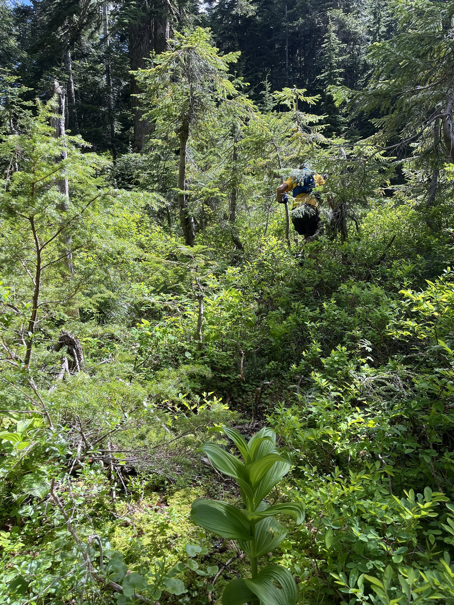
Once upon a time, there lived a Gazelle who was joyful, creative, and so optimistic that even mosquitoes felt guilty biting her. She believed every impossible thing was simply a challenge that could be overcome with enough snacks.
Not far away lived a Wolf who was mighty, clever, and endlessly adventurous. If there was a mountain nearby, the Wolf wanted to climb it. If there wasn't a mountain nearby, he'd probably go looking for one.
🦌
The Gazelle
Joyful, creative, and so optimistic that even mosquitoes felt guilty biting her. Every impossible thing is just a challenge waiting for enough snacks.
🐺
The Wolf(e)
Mighty, clever, and endlessly adventurous, and not at all fond of how many hands a good scramble seems to require.
The two first met during the Issy Alps 50K. While everyone else was wondering who came up with the idea to run uphill for fun, the Wolf and the Gazelle discovered they shared an even stranger hobby: climbing mountains that sensible people avoided and ignored.
The Wolf had walked this particular path once before, in a crueler summer. The heat had turned his two companions back before Bandera, and he had finished alone in sixty-two stubborn hours and had dreamed of returning under a kinder sky. Word of it reached the Gazelle, along with one detail that snagged in her mind like a bur—in all the years of the challenge, no woman had ever finished it.
"That doesn't seem right," said the Gazelle. "I know plenty of women tougher than mountain goats."
The Wolf nodded. "Then I suppose we'd better go and have you prove it."
They scouted the unknown corners together and became friends, which was only sensible since the course was far too dangerous to face alone. Their talents fit like two halves of a map: his sense for the route and for keeping his head when the hours grew long and her nerve of rock and ridge and, more importantly, her tolerance for his bad jokes.
~and so, the adventure began~
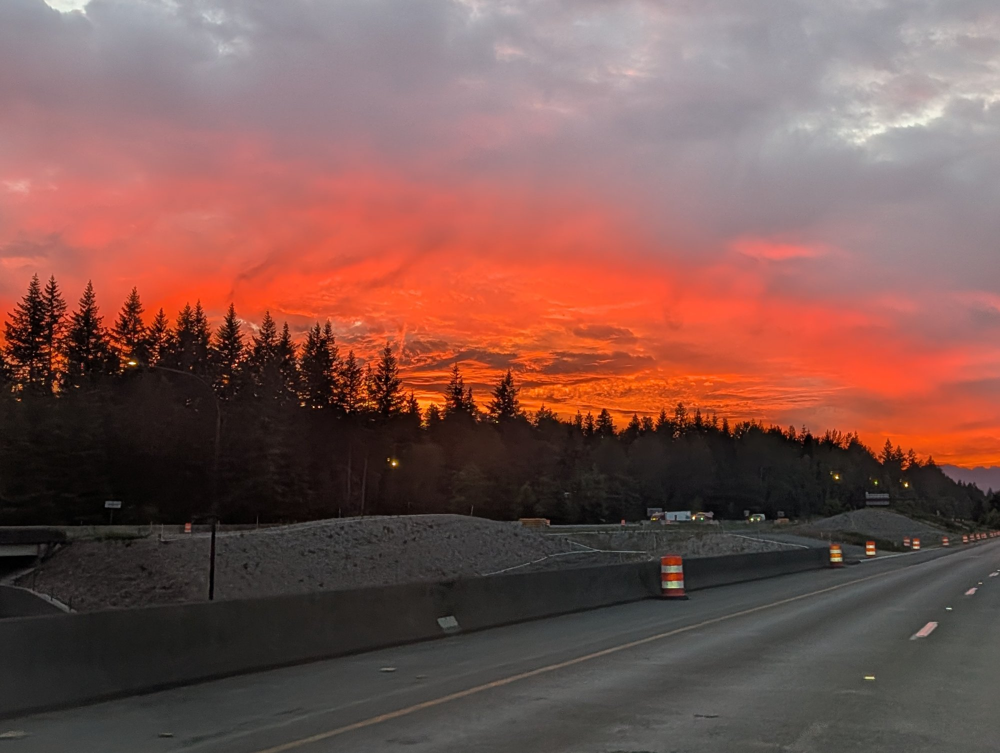
Before sunrise, they met their trusted goat friend, Vasanth. He possessed the greatest superpower of them all—a reliable car and the willingness to drive people to ridiculous adventures before dawn.
At exactly six o'clock, the three set off toward McClellan Butte.
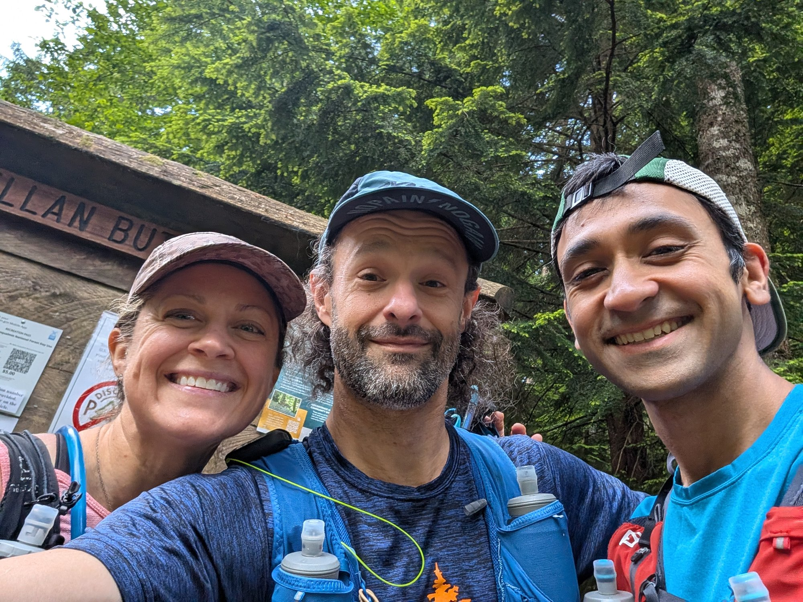
The trio bounced up the mountain eagerly. At the top, the Gazelle danced happily over the summit scramble. The Wolf stared at the rocks.
"There are... entirely too many hands involved in this hiking."
"You have paws," laughed the Gazelle.
"I know what I said."
He liked the climbing far better than the coming down—the unhalting views down unsettled him, and he met the descent with a slow breath and a long, undignified series of butt shuffles.
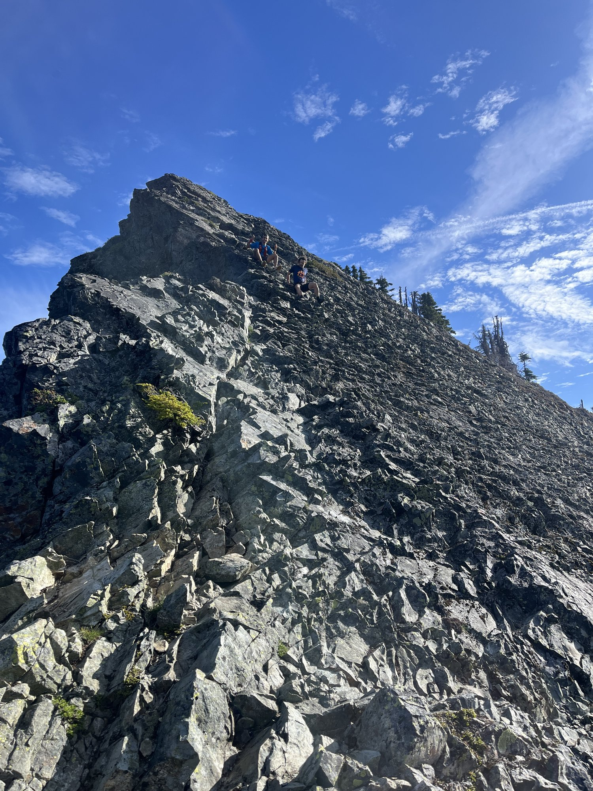
After that, they said farewell to Vasanth and set off along a route pioneered the year before by Ryan (the most recent soul to finish the challenge): through forests, boulder fields, mysterious game trails, and a maze of forgotten logging roads so overgrown they more than once navigated on pure faith and a hunch, convinced every tree in the Cascades secretly wanted a hug.
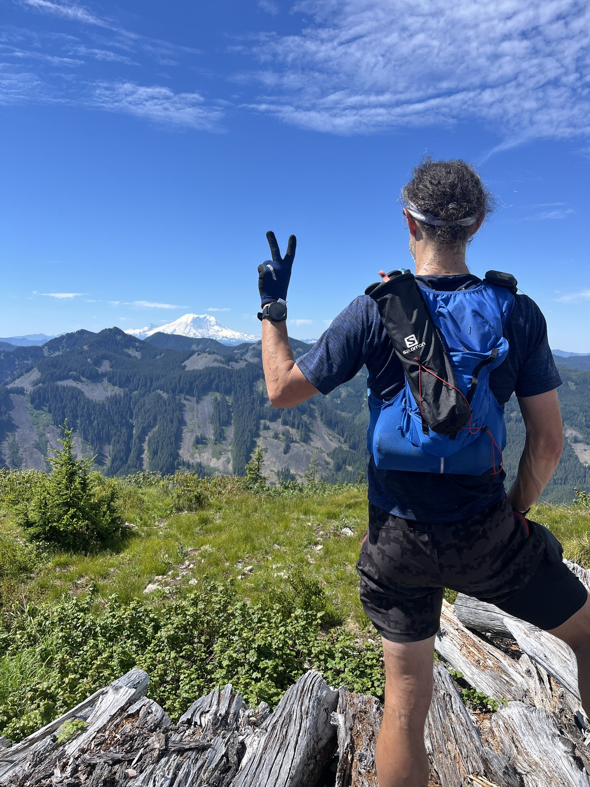
Mount Gardner climbed steeply. Little St. Helens rewarded them with a spectacular view of Mount Rainier and the small mystery of a summit cross that had once stood there and now did not.
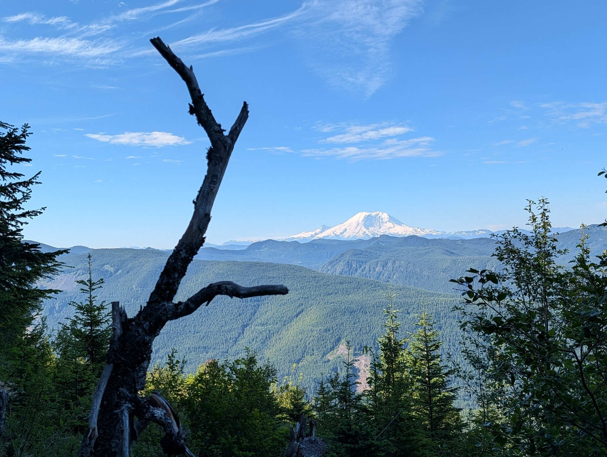
"Totally worth being scratched by seventeen different bushes," declared the Gazelle.
The Wolf silently picked another twig out of his fur.
Their route toward Scout wandered through truck roads and magical forests.
"This place is enchanted," whispered the Gazelle.
"It's definitely enchanted," agreed the Wolf. "The trees are moving."
"No..."
"They absolutely are."
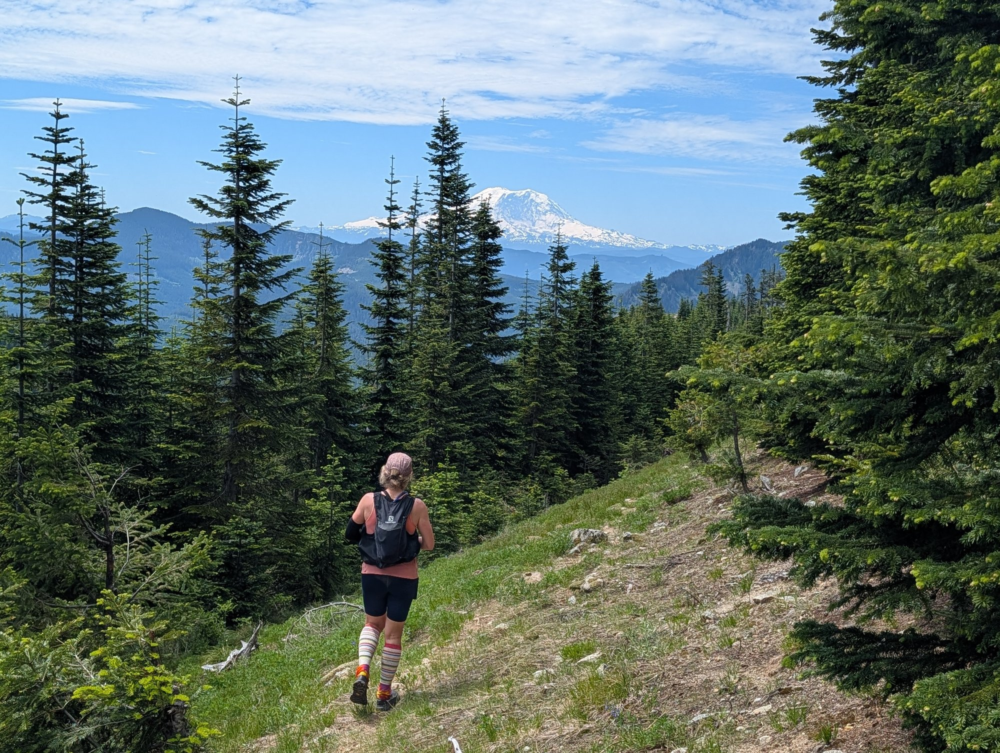
They eventually reached Humpback, where news arrived that their friend Dave, the impala, was chasing them.
"It's nice to have friends," said the Gazelle.
"It's less nice when they're faster than GPS," replied the Wolf.
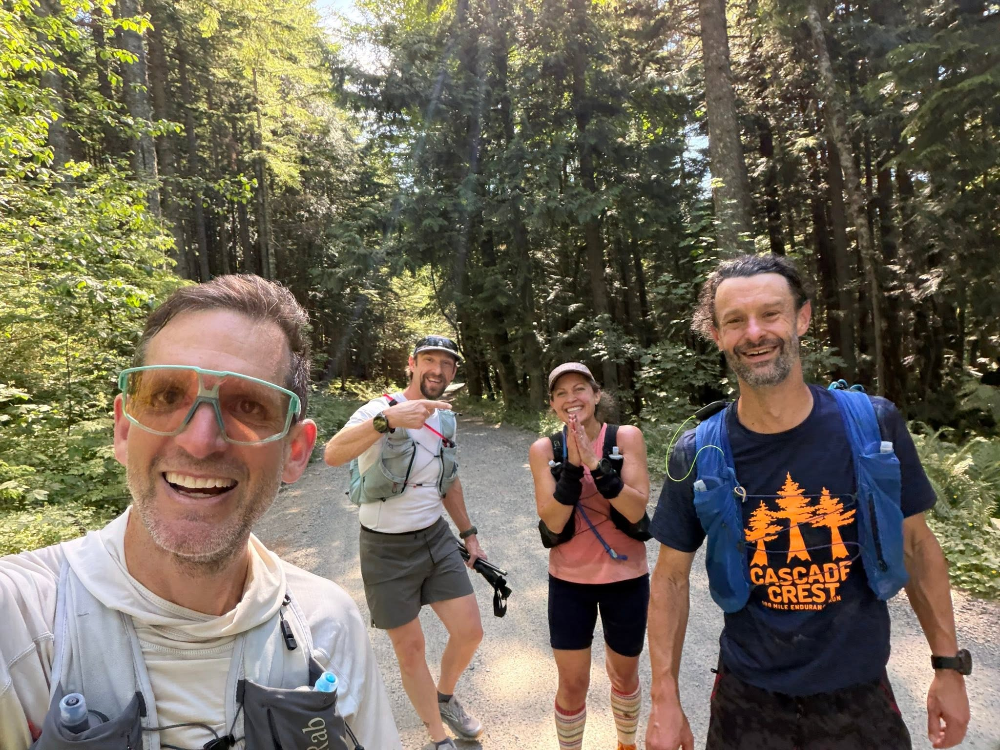
The impala had flown home only the day before and went straight out to run the course backward until he found them; he coaxed the Gazelle's stubborn watch back to life and vanished down the trail nearly as fast as he'd come. A mile from Granite, a second friend, Trevor the bulldog, came thundering up the road. At the Pratt Lake trailhead, the Gazelle's husband and son were waiting with fresh supplies and, more importantly, Thai food. Trevor appointed himself field medic and examined the Gazelle's feet.
"Those are impressive blisters."
"I was hoping they'd become calluses."
"They've chosen violence instead."
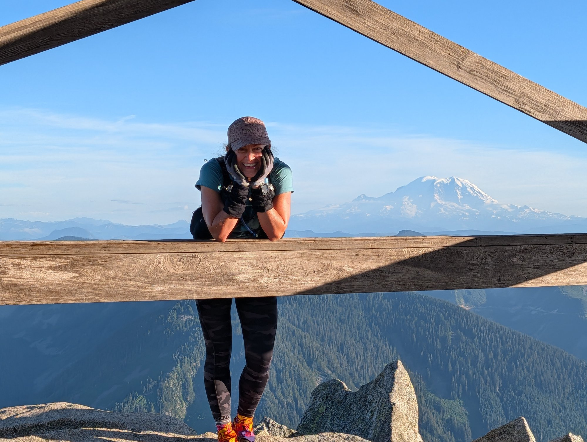
Granite Mountain greeted them with daylight, and, ungratefully, with the first turn of the Wolf's stomach. Pratt Mountain greeted them with darkness and a flawless crescent moon. Bandera greeted them with a decision. The Wolf had meant to bushwhack its north side, but with the dark closing in, he remembered a line from Ryan's route instead—unmarked on any map—and with almost no searching, they found it: a clean, sublime path straight up through the forest that skipped the worst of the climb entirely. The dreaded bushwhack turned out to be the finest trail of the night. Mason Lake greeted them with an hour-long dirt nap.
The Wolf later insisted it was the finest hotel he'd ever visited. The Gazelle gave it three stars.
"Excellent views," he said.
"Terrible room service" retorted the Gazelle.
He managed a few uneasy minutes of sleep before he woke to hearing the Gazelle shivering in the dark beside him. Time to get moving.
They returned to the path and climbed Mount Defiance, Putrid Pete, and Web in the early dawn. Descending Web required nerves of steel. The rocks shifted beneath every step. The Gazelle stayed carefully above the Wolf.
"I'd rather not accidentally roll a boulder onto you."
"Appreciated."
"It would make the rescue report awkward."
The ropes beyond Dirty Harry held and they were on their way, though the mountain lived up to its name; Dirty Box was worse—they squeezed through brush decorated with fresh goat hair.
"The goats clearly know the way," said the Gazelle.
"They also have four-wheel drive."
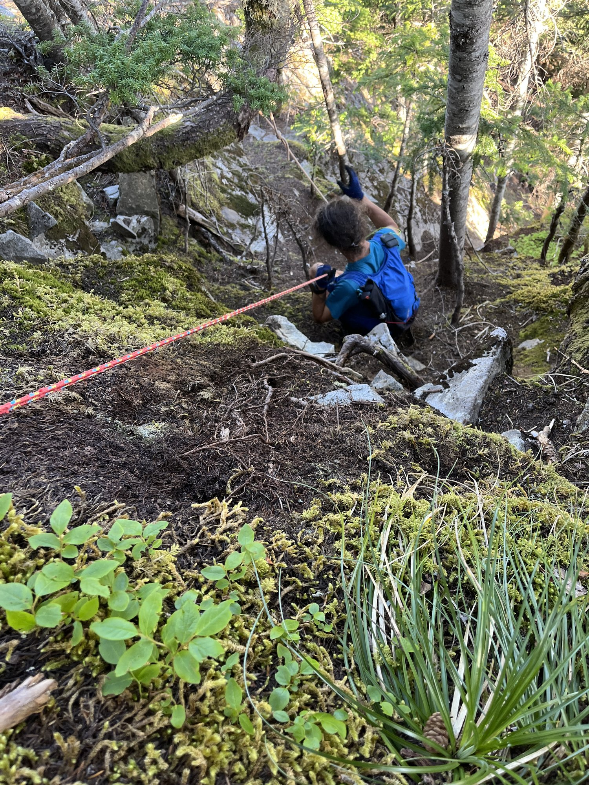
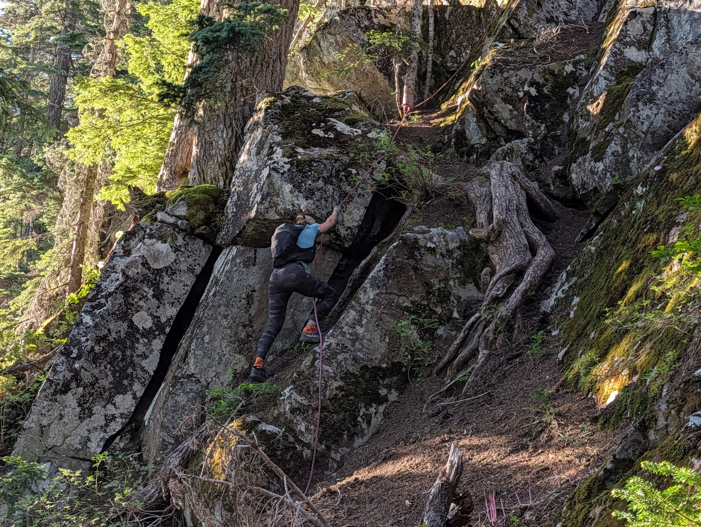
On the long scramble toward Mailbox, the Wolf questioned whether he had another mountain in him. After climbing cracks, scrambling over boulders, and questioning several life choices, they finally reached Mailbox Peak and its cheerful crowd of two dozen dayhikers: each glowing over the hardest hike they'd done in ages, none with the faintest idea these two had come the long way.
The Wolf sat, put his head in his hands, and let a few quiet tears go. Then he stood back up—because that is the only useful thing to do with a summit.
Then the mountain began giving things back. Before they were even off the boulders, there was Trevor, plowing uphill to meet them. Then Vasanth. Then Christophe. All three climbed up for no reason but to reach their friends all the sooner.
At the trailhead a whole festival of family and friends folded the Wolf into a chair, rebuilt his pack, and poured hot chocolate into him amid a blizzard of fresh socks and shirts. They provided the greatest treasures known to exhausted adventurers:
Broth.
Real food.
Encouragement.
The Wolf, who had spent much of the night unable to eat, finally managed a proper meal—the moment the warm broth touched his tongue, the whole adventure swung back toward possible.
"It tastes amazing."
"It's broth."
"It's the greatest broth in recorded history."
Then came Green to Teneriffe (the hardest section) for which reasons no one could explain, Christophe, the French goat, had volunteered to join. The Wolf noticed he was climbing Green at nearly the same hour as that first cruel attempt, only now under a perfect sky and in short sleeves—exactly the kindness and dedication he'd come back for.
The route off Green included cliffs, sketchy game trails, creek beds, and what the Wolf officially classified as "the No Error Zone"—a stretch so bare of rock and root that a single slip meant a tumbling down fifty feet of mountain. All was crossed with hooves and paws digging into the dirt to build their own holds.
The Gazelle preferred calling it "character building."
The Wolf preferred not building any more character.
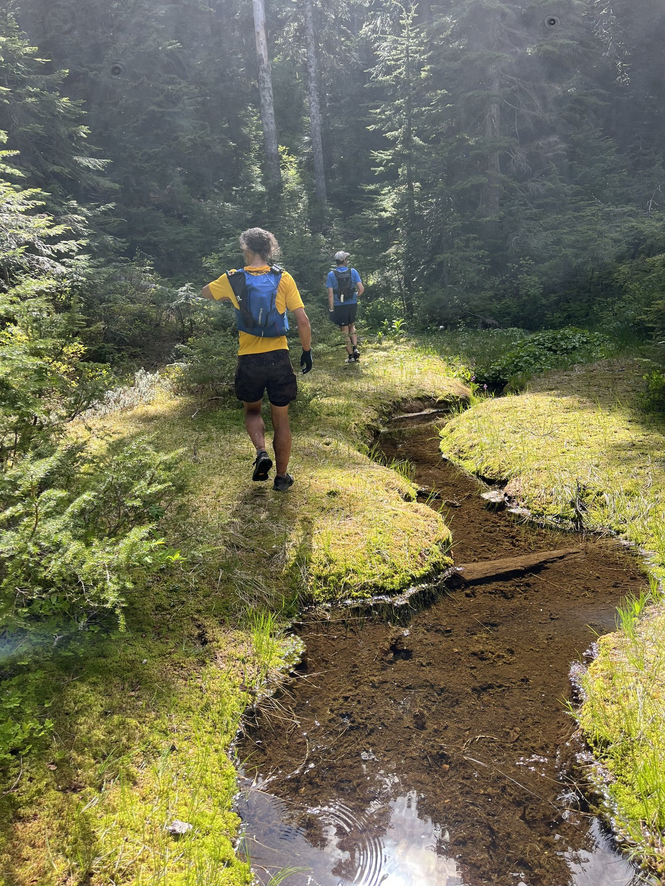
Something changed in Christophe there—the reluctant volunteer became their pacer, towing two tired friends along until, half a mile out, the Wolf saw a figure on the Teneriffe summit and knew that they would finish. Was Caroline? Only just recovered from an illness herself, she climbed all the way to the summit for the sole purpose of greeting them with snacks and noise. She instantly became everyone's favorite human. Even the mountains seemed to approve.
Christophe, having received precisely what he did not bargain for, declared his work complete and bid them adieu.
From Teneriffe to Mount Si, the trail became kinder. The Gazelle smiled.
"I think we've done the hard part."
The Wolf looked suspiciously at the mountain.
"Don't let it hear you."
They tagged Si and started down the old trail as the sun made up its mind to set on them a second time. A mile from the bottom, a familiar shout came round a bend: Vasanth, of course. Waiting, this time, with burgers and milkshakes. The Gazelle wanted no shakes and the Wolf no burgers. So they traded, and it was a match made in heaven. They stole a little sleep, and then began their final climb beneath the stars.
The Wolf finally felt stronger: a little medicine at last, and a great deal of milkshake. The Gazelle continued to slowly bounce uphill with the enthusiasm of someone who had somehow forgotten they had already climbed seventeen mountains.
One final summit remained—Rattlesnake Mountain, which had been waiting at the very end the whole time, pretending not to watch.
Together they reached the top. There was no dramatic trumpet. No cheering crowd. Just tired smiles, scratched legs, torn clothes, aching calves, blistered feet, and the quiet satisfaction of finishing something extraordinary.
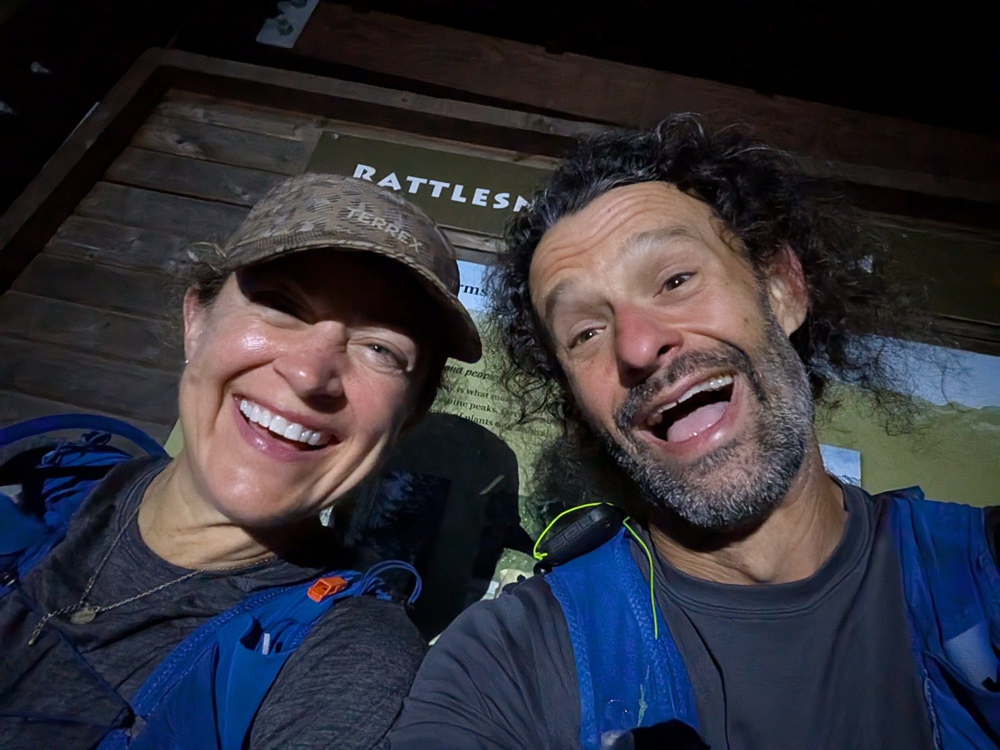
Vasanth drove them back to the trailhead while both promptly fell asleep somewhere between "Congratulations!" and "Does anyone want coffee?"
And so the Wolf completed the Harvey Manning Peak Challenge for a second time. The Gazelle became the first woman to complete it.
The mountains remained exactly where they had always been. But they would forever remember the Wolf who grumbled through every scramble...
...and the Gazelle who smiled through every mile.